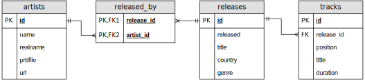
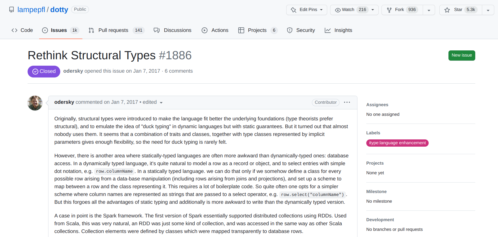
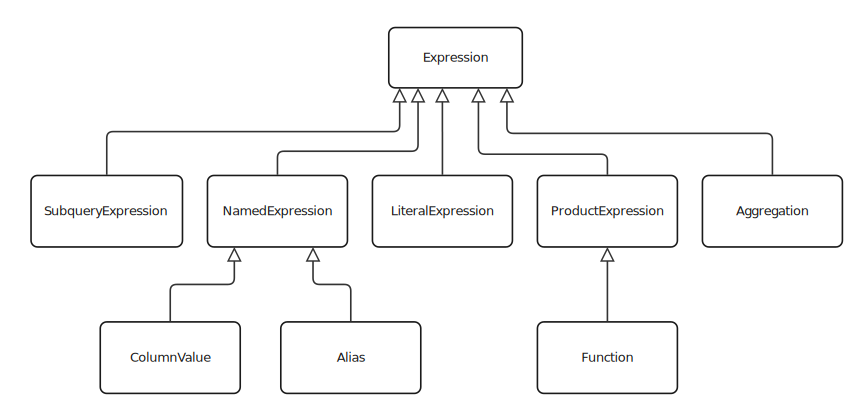
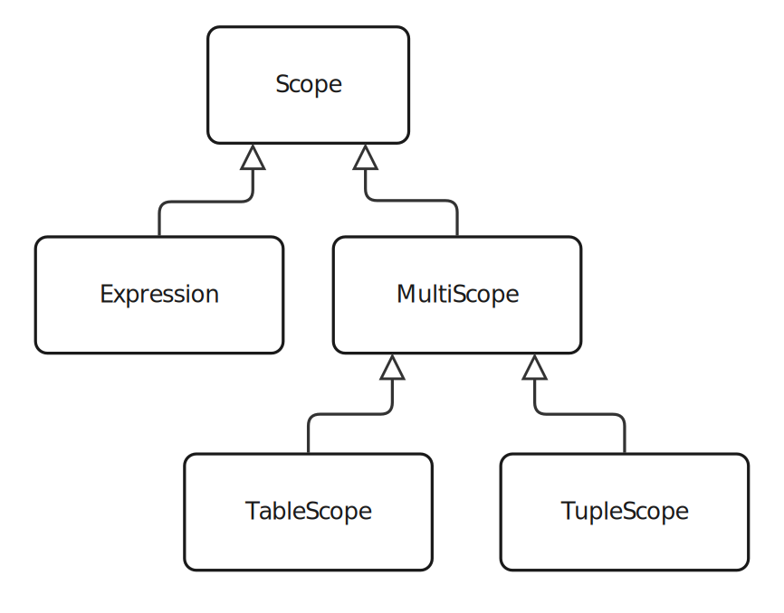
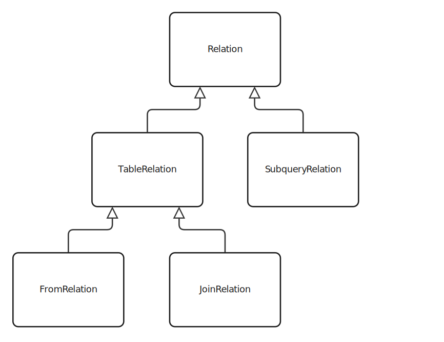

Type-safe SQL Queries in Scala
Martin
Kučera
supervised by Matt Bovel
April 6, 2023
Links

These slides: go.epfl.ch/tyqu
GitHub: github.com/KuceraMartin/tyqu
Thesis WIP: go.epfl.ch/tyqu-thesis
Discogs database

Motivation
Why type-safe SQL queries?
import java.sql.*
val connection = DriverManager.getConnection("jdbc:postgresql://...")
val st = connection.createStatement()
val rs = st.executeQuery("SELECT 'Hello, world!'")st.executeQuery("SELECT * FROM artists WHERE name >= 7")org.postgresql.util.PSQLException: ERROR: operator does not exist: character varying >= integer
Hint: No operator matches the given name and argument types. You might need to add explicit type casts.
Position: 34
at org.postgresql.core.v3.QueryExecutorImpl.receiveErrorResponse(QueryExecutorImpl.java:2676)
at org.postgresql.core.v3.QueryExecutorImpl.processResults(QueryExecutorImpl.java:2366)
at org.postgresql.core.v3.QueryExecutorImpl.execute(QueryExecutorImpl.java:356)
at org.postgresql.jdbc.PgStatement.executeInternal(PgStatement.java:496)
at org.postgresql.jdbc.PgStatement.execute(PgStatement.java:413)
at org.postgresql.jdbc.PgStatement.executeWithFlags(PgStatement.java:333)
at org.postgresql.jdbc.PgStatement.executeCachedSql(PgStatement.java:319)
at org.postgresql.jdbc.PgStatement.executeWithFlags(PgStatement.java:295)
at org.postgresql.jdbc.PgStatement.executeQuery(PgStatement.java:244)
... 32 elidedval rs = st.executeQuery("SELECT * FROM releases");
while rs.next() do
val title = rs.getString("title")
val pos = rs.getInt("position")
println(s"$pos. $title ")org.postgresql.util.PSQLException: Bad value for type int : A
at org.postgresql.jdbc.PgResultSet.toInt(PgResultSet.java:3205)
at org.postgresql.jdbc.PgResultSet.getInt(PgResultSet.java:2422)
at org.postgresql.jdbc.PgResultSet.getInt(PgResultSet.java:2817)
... 32 elidedWhy another library?
Structural refinements
class Record(elems: (String, Any)*) extends Selectable:
private val fields = elems.toMap
def selectDynamic(name: String): Any = fields(name)
type Person = Record { val name: String; val age: Int }
val person = Record(
"name" -> "Emma",
"age" -> 42,
).asInstanceOf[Person]
Joins
In Slick:
tracks
.join(releases).on(_.releaseId === _.id)
.filter(_._2.title === "Californication")
.map(_._1.title)Or equivalently:
for
t <- tracks
r <- releases if t.releaseId === r.id
yield
t.titleVision:
tracks
.filter(_.release.title === "Californication")
.map(_.title)Even better type safety
e.g. group by in Quill:
releases.groupByMap(_.genre)(r => (r.genre, r.title))Readable SQL
Tyqu
How to describe a schema
object Releases extends Table:
val id = Column[Int](primary = true)
val title = Column[String]()
val country = Column[String]()
val genre = Column[String]()
lazy val artists = ManyToMany(target = Artists,
joiningTable = ReleasedBy,
sourceColumn = ReleasedBy.releaseId,
targetColumn = ReleasedBy.artistId)
lazy val tracks =
OneToMany(target = Tracks, through = Tracks.release)How to write queries
val q = from(Tracks).map{ t => (
t.title,
t.position,
) }
for row <- q.execute() do
println(s"${row.title} ${row.position}")val q = from(Tracks).map{ t =>
val fullTitle = (
t.position + ". " + t.title + " (" + t.release.title + ")"
).as("fullTitle")
(t.title, t.position, fullTitle)
}
for row <- q.execute() do
println(row.fullTitle)val q = from(Releases)
.filter(_.artists.exists(_.name === "Radiohead"))
.filter(_.tracks.count < 5)
.map(_.title)
.sorted
q.execute().foreach(println)val q = from(Artists)
.filter(_.releases.flatMap(_.tracks).map(_.duration).sum >= 10000)from(Tracks)
.map{ t => (t.release.genre, t.duration) }
.groupMap(_.genre){ r => (r.genre, r.duration.avg.as("avgDuration")) }
Under the hood
def from[T <: Table](table: T) =
val rel = FromRelation(table)
val scope = TableScope(rel)
QueryBuilder(scope, rel)class QueryBuilder[S <: Scope](
scope: S,
from: FromRelation[?] | SubqueryRelation,
where: Expression[Boolean] = NoFilterExpression,
groupBy: List[Expression[?]] = List.empty,
orderBy: List[OrderBy] = List.empty,
limit: Option[Int] = None,
offset: Int = 0,
):
def map[S2 <: Scope](fn: S => S2): QueryBuilder[S2]
def flatMap[S2 <: Scope](fn: S => QueryBuilder[S2]): QueryBuilder[S2]
def groupMap[G <: Scope, M <: Scope](g: S => G)(m: S => M): QueryBuilder[M]
def filter(predicate: S => Expression[Boolean]): QueryBuilder[S]
def sortBy(fn: S => OrderBy | Tuple): QueryBuilder[S]
def sorted(desc: Boolean): QueryBuilder[S]
def sorted: QueryBuilder[S]
def limit(v: Int): QueryBuilder[S]
def offset(v: Int): QueryBuilder[S]
def exists(predicate: S => Expression[Boolean]): Expression[Boolean]
def count: QueryBuilder[Expression[Int]]
def execute()(using executor: QueryExecutor): Iterator[Result[S]]inline transparent def map[Sc <: Scope, Tu <: Tuple, S2 <: (Sc | Tu)](inline fn: S => S2): QueryBuilder[?] =
val (originalScope, newQb) = prepareMap
QueryBuilderFactory.fromMap[S, Sc, Tu, S2](originalScope, newQb, fn)// QueryBuilderFactory.fromMap (tuple case)
val selection = '{$fn($originalScope)}.asExprOf[Tu]
ScopeFactory.refine[Tu, TupleScope] match
case '[ScopeSubtype[t]] =>
'{ $newQb.copy(scope = TupleScope($selection)).asInstanceOf[QueryBuilder[t]] }Future work
- single-row queries
- async
- make ready for customizations
- DML (insert, update, delete)
- transactions
- generating:
- DDL from schema
- schema from DDL
- migrations
Conclusion
- Tyqu
- a type-safe SQL query builder
- with convenient projections (i.e.
.map()) - and convenient joins
- Achievements:
- 3 reported issues in Dotty
- 2 reported issues in scala-cli
- 2 merged PRs in scala-cli
- Accepted talk for Scala Days Madrid
Backup slides
AST example
from(Releases)
.filter(r => r.genre === "Classical" && r.title.contains("Sonata"))
.sortBy(_.title.asc)
.limit(10)QueryBuilder(
scope = TableScope(releasesRelation),
from = releasesRelation,
where = And(
Function("=", List(
ColumnValue("genre", releasesRelation),
LiteralExpression("Classical"),
)),
Contains("Sonata", ColumnValue("title", releasesRelation)),
),
orderBy = List(Asc(ColumnValue("title", releasesRelation))),
limit = Some(10),
)

Relationships
from(Releases)
.map{ r => (
r.title,
from(Tracks)
.filter(_.releaseId === r.id)
.count
.as("cnt"),
) }
.limit(10)class TableScope[T <: Table, Nullable <: Boolean](
private[tyqu] val relation: TableRelation[T],
) extends MultiScope with Selectable:
def selectDynamic(name: String): Any =
relation.table.getClass.getMethod(name).invoke(relation.table) match
case c: Column[?] =>
relation.colToExpr(c)
case OneToMany(sourceTable, ManyToOne(_, through)) =>
from(sourceTable).copy(where = ...)
case ManyToOne(target, through) =>
val rel = JoinRelation(target, JoinType.Left, ...)
TableScope(rel)
case ManyToMany(targetTable, joiningTable, sourceColumn, targetColumn) =>
...
Group by
abstract class Expression[T, CanSelect <: Boolean]
abstract class ProductExpression[T, Arguments <: Tuple | Expression[?, ?]] extends Expression[T, ArgsCanSelect[Arguments]]inline transparent def groupMap
[G <: (Tuple | Scope), Sc <: Scope, Tu <: Tuple, M <: (Sc | Tu)]
(g: T => G)
(using mapRef: GroupMapScope[G, T])
(m: mapRef.Refined => M)
(using IsValidMapResult[M] =:= true): QueryBuilder[?]